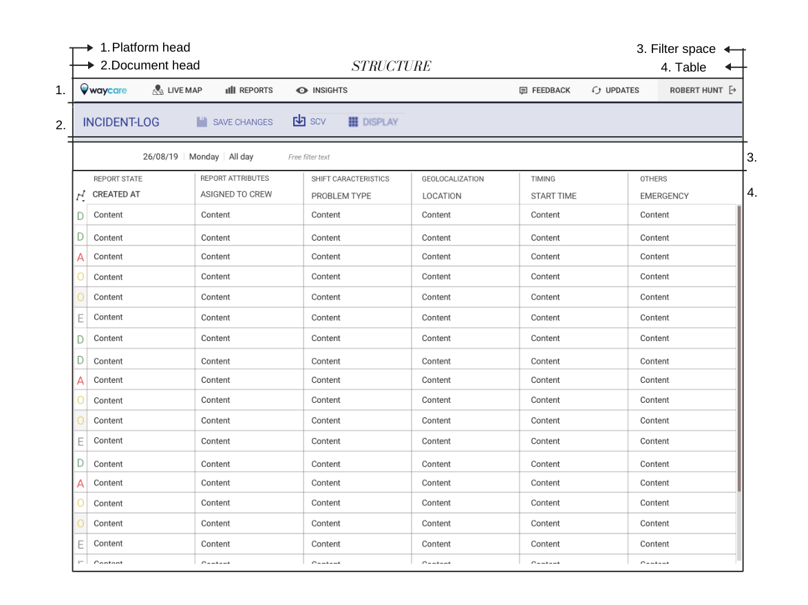
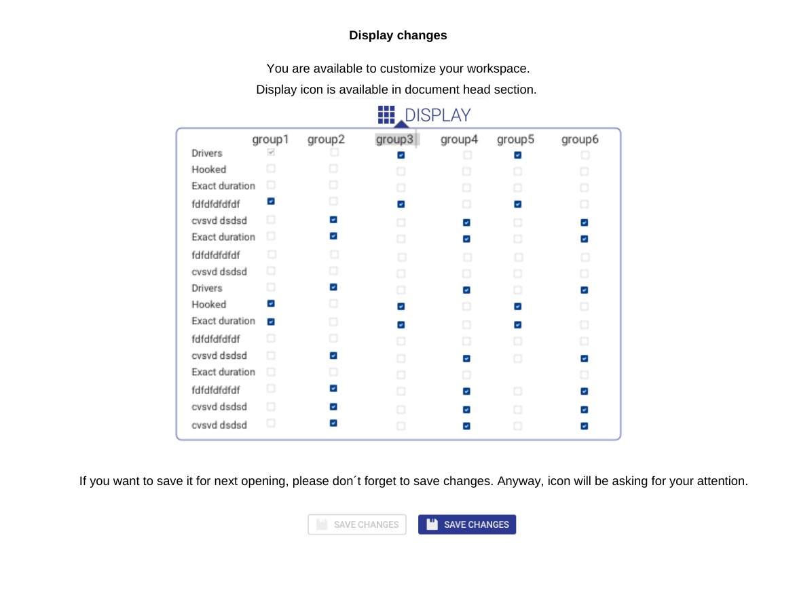
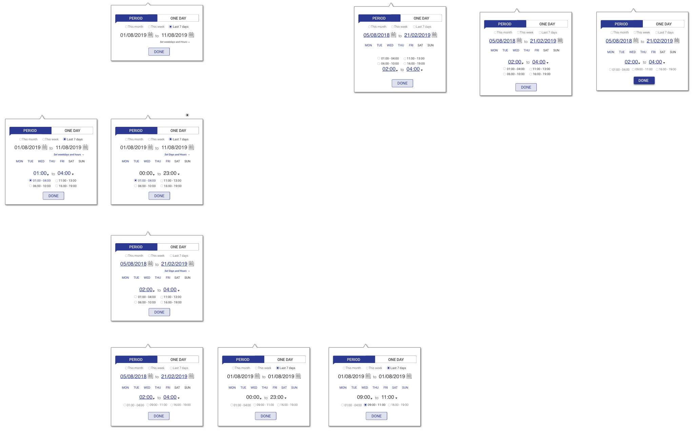
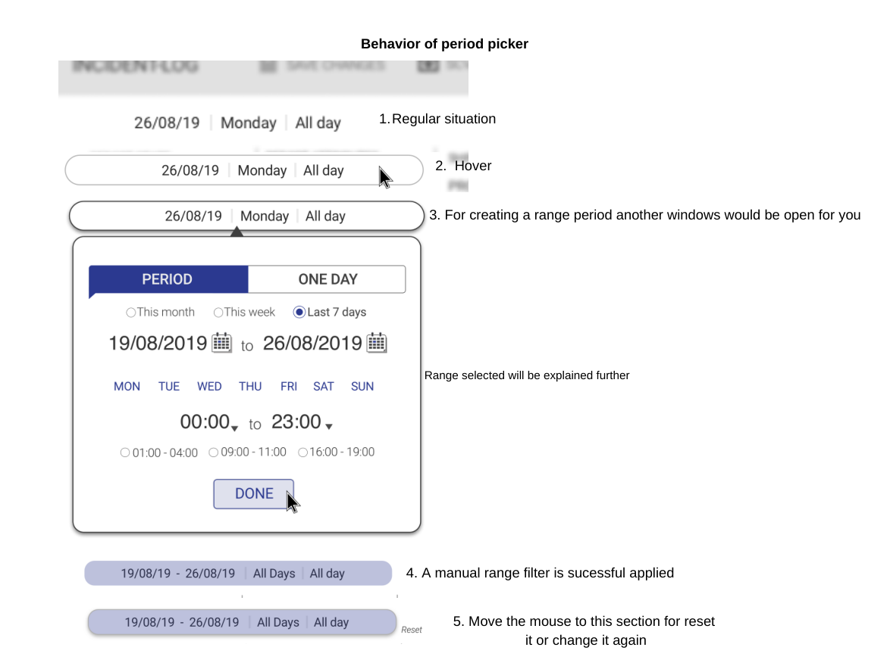
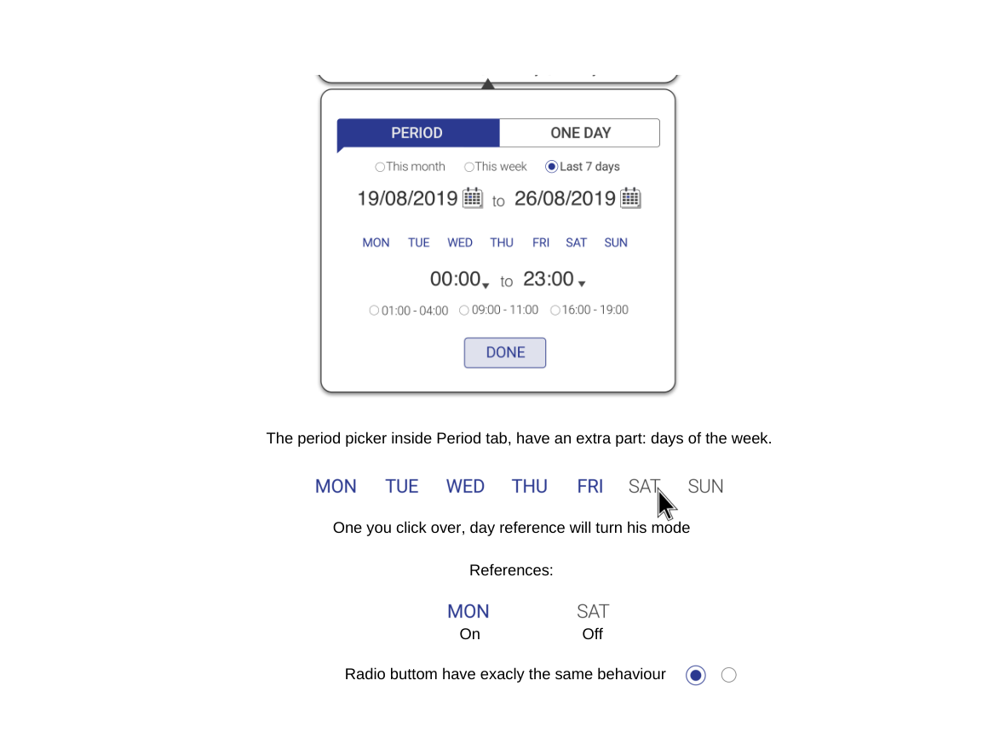
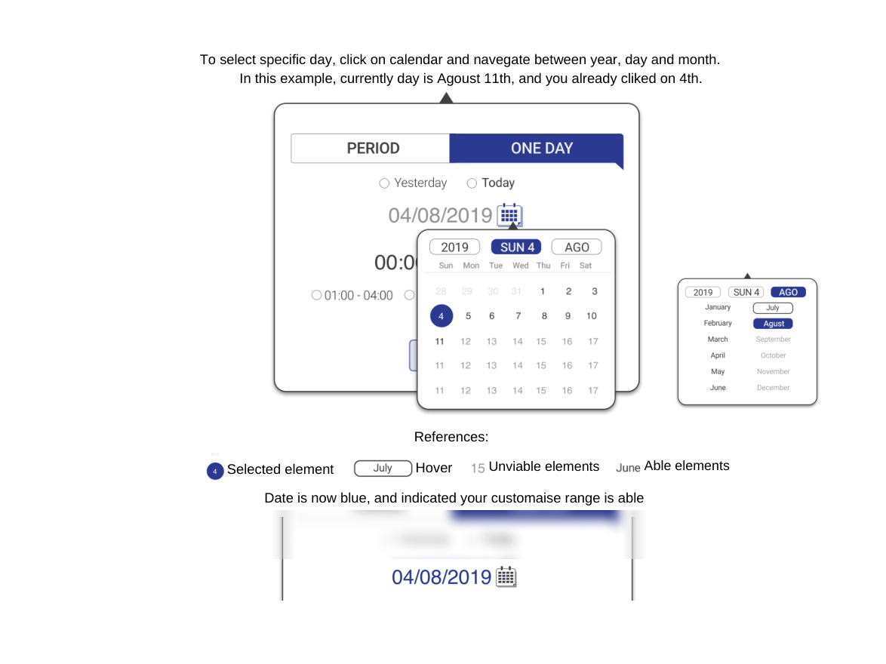
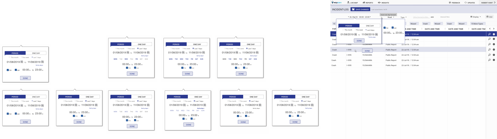
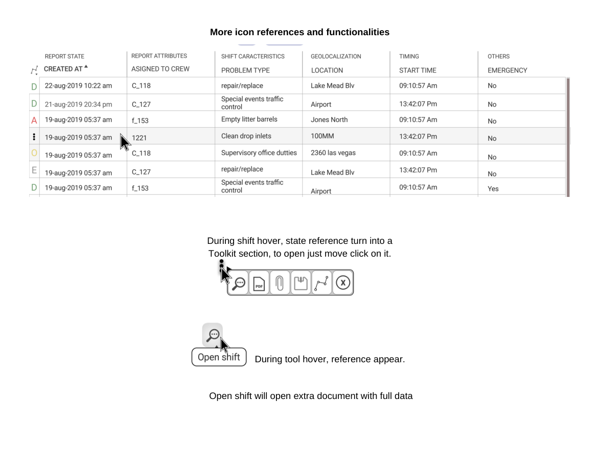
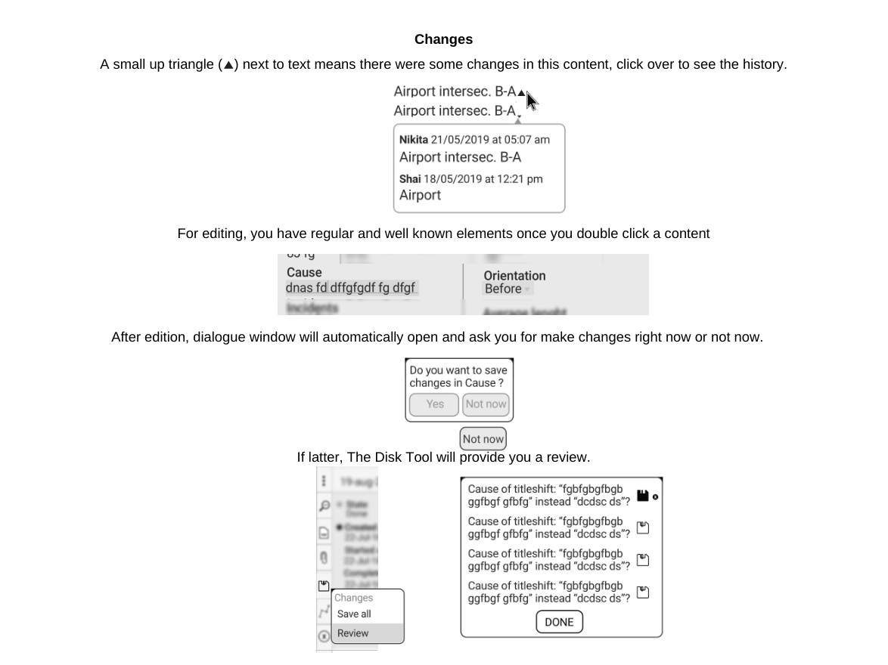
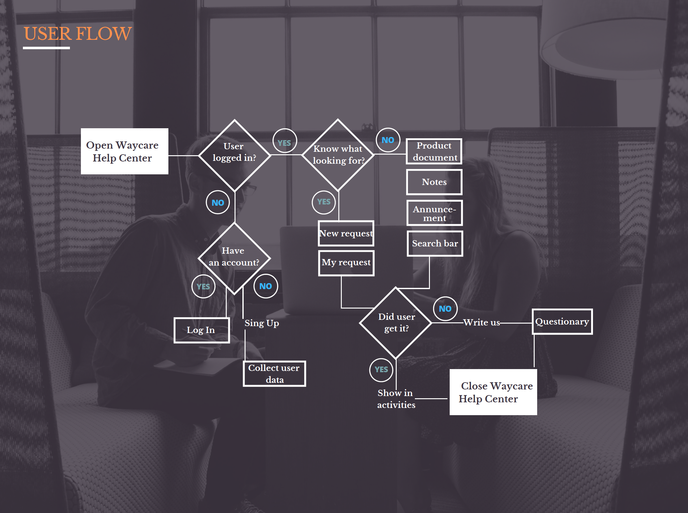

The incident log of Waycare’s AI traffic-management platform, used in smart-city operations: from workflow mapping to a 16-page behaviour spec and pixel-perfect UI, plus the customer Help Center designed alongside it.
Waycare’s platform uses AI for traffic management in smart-city operations. Operators work on a live map, and behind it sits a back-office where every incident and shift is reviewed, filtered and updated. The incident log is a wide table with many columns and a long history; it is where operators spend most of their time, and where the most could be gained.
How do you give users dense data, flexible filtering and in-place editing without making the screen feel like a spreadsheet?
I mapped the workflow around the table, from opening a day’s log to saving a change, and split the screen into four areas: platform head, document head, filter space and table. Everything that follows lives in one of them.

Columns are split into labelled groups (report state, report attributes, shift characteristics, geolocation, timing, others), so a user reads one theme at a time. A Display panel lets each person choose which groups to show and keep that workspace for next time.


Free-text filters become chips once confirmed. Hover explains each element, and chips can be deleted one by one or all at once. The filter space stays quiet until it is needed.

Time is the first filter almost everyone reaches for, so the period picker is specified screen by screen. Two modes: Period (a date range with presets, weekdays and hours) and One day (a day and an hour range). Selected values turn blue, unselected ones stay quiet, and the applied range collapses into a chip that resets on hover.






A one-letter state at the start of each row (Ongoing, Done, Required attention, Paused, Eliminated) gives quick orientation; sorting and filters appear on hover. Each shift has a toolkit: open shift, download, open attachment, mark as, changes, eliminate.



Double-click expands a shift to its full record; double-click a value to edit it. Edited fields carry a small marker with their history, and a dialog asks whether to save now or review first. The Display icon reminds you to save your workspace.

Every behaviour (regular, hover, selected, unselected, empty, saved) is documented in a 16-page interaction spec so engineering could build without guessing. Reusable Sketch symbols for radios, checkboxes, tabs and picker states kept the screens consistent, and the icon set for the platform was redrawn pixel-perfect in Illustrator.
Alongside the table I designed the customer-facing Help Center on Zendesk: the user flow from login to request, the home with its three entry points (product documentation, FAQs, news and release notes) and the branding for the section.
